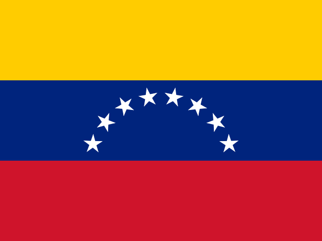

Venezuela : actualité vérifiée et risque
Amérique latine et Caraïbes · 2 événements · Dernière couverture 29 oct.
| 18 oct. | 0 |
|---|---|
| 19 oct. | 0 |
| 20 oct. | 2 |
| 21 oct. | 0 |
| 22 oct. | 0 |
| 23 oct. | 2 |
| 24 oct. | 0 |
| 25 oct. | 2 |
| 26 oct. | 0 |
| 27 oct. | 3 |
| 28 oct. | 3 |
| 29 oct. | 0 |
| 30 oct. | 0 |
| 31 oct. | 0 |
En bref
Venezuela apparaît dans 2 événements sur ATHENA, dans 2 de ses dix rubriques. Aucun n'est à risque élevé.
Par rubrique
Les événements les plus importants
- GéopolitiqueThe facts about Brazil's president Lula da SilvaRisque 3.1 · 27 oct.
- Économie et marchésVenezuelan leader demands Bank of England return goldRisque 0.0 · 29 oct.
Suivis concernant Venezuela
Pays présents dans les mêmes événements
Actualité locale : Venezuela
Chargement…